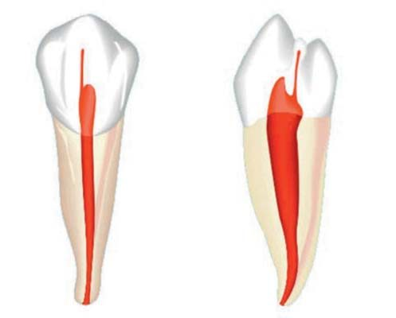
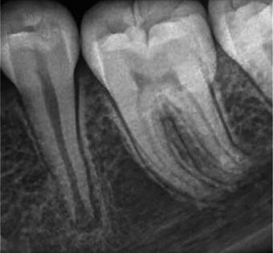
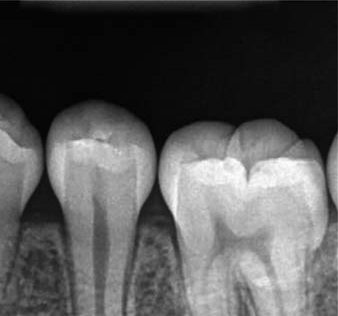
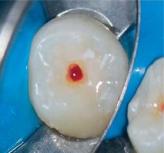
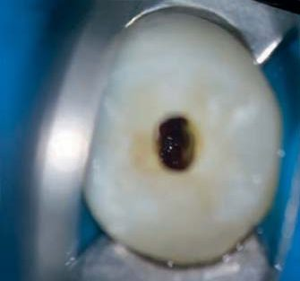
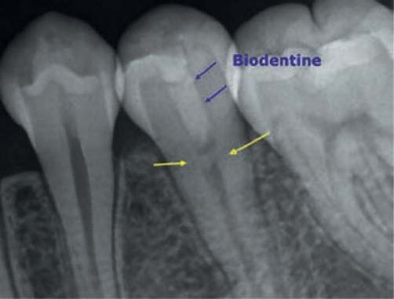
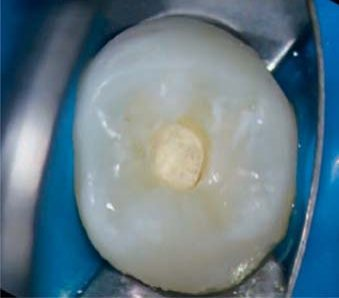
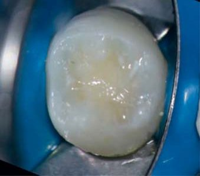
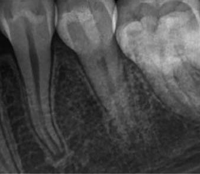
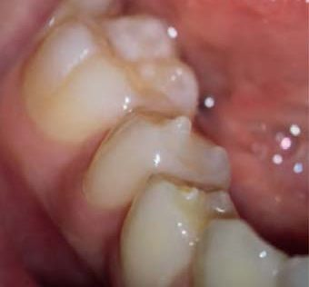

Практичний досвід · журнал «ДентАрт» 2022 №4
Лікування вітальної пульпи матеріалом Biodentine™ у разі дентальної евагінації
Treatment of vital pulp with Biodentine™ material in the case of dental evagination
Dens evaginatus, або «евагінований зуб», — це відхилення розвитку зуба, що виникає внаслідок утворення додаткового горбика. Такий нестандартний горбик височить над сусідньою ділянкою емалі і являє собою покриту емаллю дентинну основу, що зазвичай усередині містить пульпову тканину.
Вступ
Наявність пульпи всередині схожого на бугор горбика має велике клінічне значення і відрізняє цю аномалію від додаткових горбиків, таких як горбик Карабеллі, в якому пульпи немає. Евагінація виникає переважно на оклюзійній поверхні нижніх премолярів і на лінгвальній поверхні фронтальних зубів (зазвичай на верхніх латеральних різцях). У багатьох випадках евагіновані зуби зустрічаються у пацієнтів азіатського походження (у 0,5–4,3 %, залежно від складу групи), частіше у жінок, і зазвичай уражають симетричні зуби.
Горбик може на 1–6 мм виступати за межі оклюзійної поверхні і спричинити формування патологічного прикусу під час прорізування. Внаслідок хронічної оклюзійної травми поверхня горбика може пришвидшено стертися або призвести до перелому та оголення пульпи. Найімовірнішим наслідком є запалення або інфікування пульпи, тому дуже важливо розпізнати й вилікувати її якомога швидше, щоб запобігти некрозу пульпи, гострому апікальному періодонтиту та абсцесу.
Лікування несформованих зубів має бути спрямоване на збереження вітальності пульпи для сприяння фізіологічному формуванню кореня на повну довжину і товщину, аж до апікального закриття. Це зміцнить зуб, адже через тонкі стінки кореня такі зуби можуть ламатися. Багато матеріалів — гідроксид кальцію та MTA — використовували для збереження вітальності пульпи, проте нині перевагу надають біокерамічним матеріалам. Якщо зуб вилікувати перед тим, як станеться некроз пульпи, ймовірність успіху перевищує 90 %.
Biodentine™ (Septodont) — це оснований на силікаті кальцію матеріал з багатьма показаннями: перфорація кореневих каналів, апексифікація, резорбція, ретроградне пломбування, покриття пульпи та заміщення дентину. У лікуванні зі збереженням вітальності пульпи Biodentine™ діє завдяки ефекту біомінералізації, який утворює щільне з'єднання й унеможливлює підтікання та контамінацію пульпи.
Клінічний випадок
10-річну пацієнтку азіатського походження її дитячий стоматолог направив до нашого кабінету для обстеження й лікування другого нижнього премоляра, який був двобічно евагінованим зубом. Пацієнтка відчувала реакцію на холод у зубі нижньої щелепи ліворуч упродовж 6 місяців з моменту перелому горбика через оклюзійне навантаження. Дитячий стоматолог закрив оклюзійну поверхню композитом, але відчуття холоду і дискомфорт не минули. На періапікальних рентгенограмах було помітно, що апекс відкритий; зуб сильно, хоч і нетривало, реагував на холодову пробу.
Було вирішено провести часткову пульпотомію, щоб зберегти вітальність пульпи і посприяти безперервному розвитку кореня. Після блокади нижнього альвеолярного нерва (Lignospan®, Septodont) зуб ізолювали рабердамом. Отвір для доступу зробили консервативно конусним бором. Коли дійшли до пульпи, з'явилася помірна кровотеча; приблизно 2 мм запаленої пульпи ампутовано, після чого для дезінфекції та зупинки кровотечі нанесли гіпохлорит натрію та скористалися стерильними ватними кульками.
Капсулу Biodentine™ підготували згідно з інструкцією (5 крапель рідини, змішування 30 секунд), обережно нанесли на пульпові тканини та ущільнили стерильними паперовими штифтами й плагером, залишивши твердіти на 12 хвилин. Зуб протравили ортофосфорною кислотою (Ultra Etch), нанесли адгезив (Clearfil Photo Bond) і засвітили 10 секунд. На Biodentine™ нанесли матеріал подвійного отвердіння для кукси (Absolute Dentin), а оклюзійну поверхню облицювали композитом (Filtek Z-100), після чого зробили фінірування й полірування.
Через 4 місяці пацієнтка прийшла на контрольний візит без скарг: зуб нормально реагував на холодову пробу, відтермінованих реакцій не було. На періапікальних рентгенограмах видно, що корінь розвивається, а під Biodentine™ формується дентинний місток. Отже, вітальність пульпи збережено, і корінь буде й далі розвиватися.











Клінічний випадок: dens evaginatus та двобічно евагінований премоляр, вигляд перед лікуванням, передопераційні рентгенограми, запалена пульпа й зупинка кровотечі, нанесення Biodentine™, остаточна реставрація та контроль через 4 місяці з формуванням дентинного містка.
Обговорення
Евагіновані нижні премоляри можуть спричинити проблеми, оскільки може статися передчасне оголення пульпи, зокрема якщо корінь сформувався неповністю. Запорукою правильного лікування таких зубів є виявлення й лікування на ранньому етапі, адже інакше може розвинутися некроз пульпи, зуби залишаться несформованими, а ризик переломів кореня зросте. У нашому випадку пульпа була ще життєздатною, тому рекомендована вітальна ампутація пульпи. Biodentine™ є надзвичайним матеріалом для таких випадків, адже він сприяє загоєнню пульпи, завершенню формування кореня, закриттю апекса і дозволяє встановити постійну реставрацію протягом одного візиту.
Висновки
У цьому випадку лікування пульпи проведено успішно, а з використанням Biodentine™ процедура стала навіть простішою. Пульпа залишилася вітальною, корінь міг далі формуватися, а пацієнтка не відчуває дискомфорту. У майбутньому знадобляться додаткові обстеження, щоб оцінити віддалений результат. Biodentine™ добре підійшов для такої процедури, тому у лікуванні зі збереженням вітальності пульпи варто розглядати цей варіант.
Література
- Levitan M. E., Himel V. T. Dens evaginatus: literature review, pathophysiology, and comprehensive treatment regimen. J Endod. 2006; 32(1): 1–9.
- Stecker S., Di Angelis A. J. Dens evaginatus. A diagnostic and treatment challenge. J Am Dent Assoc. 2002; 133(2): 190–193.
- Jerome C. E., Hanlon Jr. R. J. Dental anatomical anomalies in Asians and Pacific Islanders. J Calif Dent Assoc. 2007; 35(9): 631–636.
- Sarraf P., Nekoofar M. H., Sheykhrezae M. S., Dummer P. M. H. Fracture Resistance of Immature Incisors Following Root Filling with Various Bioactive Endodontic Cements Using an Experimental Bovine Tooth Model. Eur J Dent. 2019 May; 13(2): 156–160.
- Haapasalo M., Parhar M., Huang M., Wei X., Lin J., Shen Y. Clinical Use of Bioceramic Materials. Endod Topics. 2015; 32: 97–117.
- Witherspoon D. E., Small J. C., Harris G. Z. Mineral trioxide aggregate pulpotomies: A case series outcomes assessment. J Am Dent Assoc. 2006; 137: 610–618.